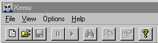
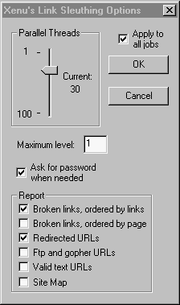

Xenu's Link Sleuth Version 1.1c. Berlin: Tilman Hausherr. Price: FREENote: Since this review was published Tilman Hausherr has made further amendments to his programme and the current version (as of 22 July 2001) is 1.1f. The changes made are listed at his Web site. I imagine that most readers will realise that a site like InformationR.Net needs considerable maintenance and that a major part of that maintenance, apart from editing Information Research, must go into checking the links in the various information resources on the site. When I first began to develop these resources my link-checking was haphazard and fitted in when time allowed, and, particularly for the World List, a lot depended upon people notifying me of changes. Now, however, the process is no longer haphazard, although it still needs to be fitted in as time allows. The big difference is that I discovered Xenu's Link Sleuth. Xenu (for short) is spidering software for checking links on Web sites developed by Tilman Hausherr and made freely available from his Web site. You simply download a small (206kb) zip file, unzip it and locate it wherever you wish in your filing system: even unzipped it is still small - the .exe file is only 410 kb. When you run Xenu, you get a very simple window, the important part of which is shown in Figure 1. As you can see, it gives you little to worry about in the way of drop down menus and buttons. To get started, you click on 'File' and then click on 'Check URL'. The pop-up window that appears is shown in Figure 2. Enter the URL as shown - this may be a file location on your hard disc, rather than a Web page, so you can actually check links before uploading a new page - and then click the 'More options' button at the bottom left of the window. The window that appears (Figure 3) allows you to set the level to which the spider should search and the more levels you set, the longer the process will take. If you wish to check only those links you have entered on a page (which is my case) you will set the level to '1'. Xenu is very fast: the page shown in Figure 2 had 67 links on it and was checked in about 40 seconds, and that on a domestic modem. Xenus is fast because the spider searches a number of threads simultaneously - as you see from Figure 3, you can set this number yourself. I have left it at 30, which was the default setting, but Hausherr states that he normally finds satisfactory performance with it set to 70. You can also determine the kind of output you get: in Figure 3, I have asked for the broken links, ordered by links, and redirected links - this is the most useful pair of outputs from my point of view. As the search proceeds, the main screen is continually reporting the state of the search, with the links changing colour as they are found to be live (green), or presenting problems (red). Figure 4 shows the output screen for the search on Wlist4.html. The output on the Xenu screen can also be reported as a Web page and I find this the most useful form of output, since you can use the hotlinks to move to and from the problem sites. Xenu's FAQ file lists its advantages (slightly edited):
The FAQ also points to competing sofware and services, but after looking at the prices of WebAnalyzer2 (CAN$419.95), Linkbot (US$295.00), InfoLink (US$49.95), LinkScan (US$300.00), LinkAlarm (a Web-based service that will check, for example, 100 pages a week for one year for US$52.00), and for the MAC, Theseus (US$49.00), I decided that a free information provider should stick with a piece of free software. There really isn't much more to be said about this piece of software: it does a very necessary job very quickly and effectively and I would now be lost without it. Judging by my own searches for information, more sites need to use it: people forget how quickly sites disappear or change their address (see Wallace Koehler's paper in Information Research). If you haven't checked your home page for a while, download Xenu and do it - you'll probably be surprised at the result. Professor Tom Wilson |
){kind=link}
){kind=link}